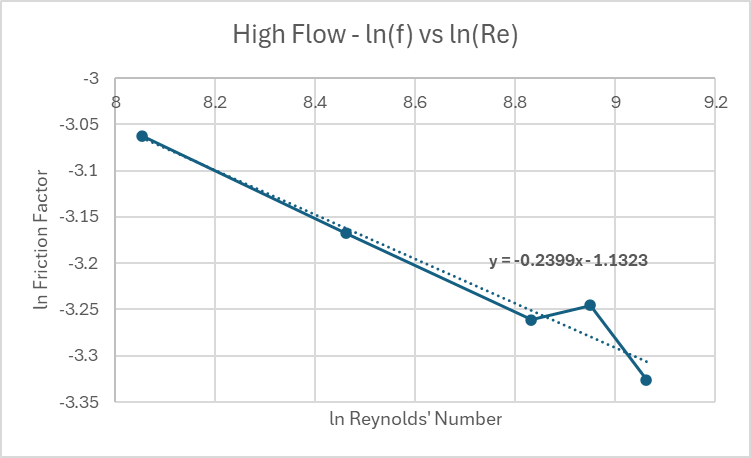
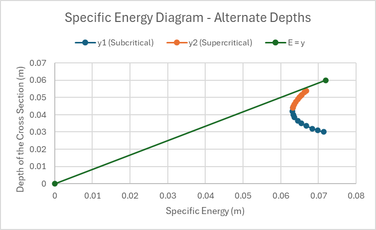
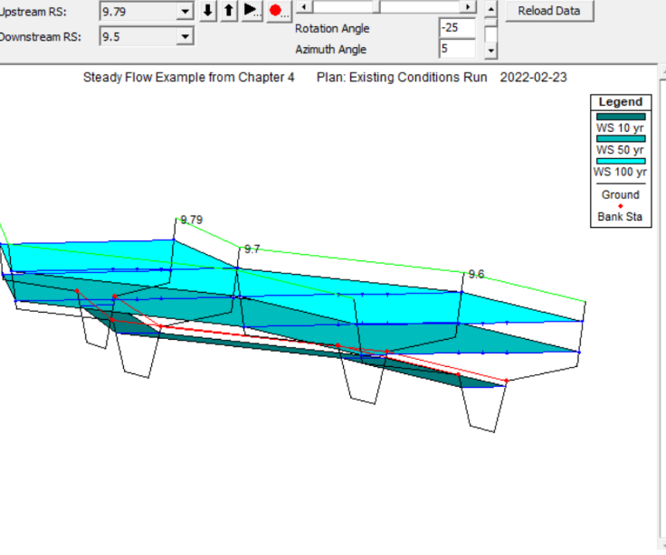

LAB 01 · BERNOULLI
Energy distribution
Timed volumetric flow and six manometer / probe readings were used to compare static head, velocity head, and total head across a horizontal converging-diverging duct.
1.75 × 10-4m³/s highest measured discharge
CVL 502 · HYDRAULIC ENGINEERING · WINTER 2026
A hydraulic engineering lab series connecting physical testing, pipe-network analysis, open-channel behaviour, and steady-flow flood modelling.
ENGINEERING WORKFLOW
PROJECT OVERVIEW
The work moves from controlled bench-scale measurements to digital decision-making tools. Each part tests the assumptions behind the next: conservation of energy, friction and local losses, flow control in channels, then system-level modelling using EPANET and HEC-RAS.
Labs 1-3 established how energy is distributed and dissipated in closed conduits: first through a varying-area section, then along a straight pipe, and finally through fittings.
Static head falls through the contraction while velocity head rises.
LAB 01 · BERNOULLI
Timed volumetric flow and six manometer / probe readings were used to compare static head, velocity head, and total head across a horizontal converging-diverging duct.
LAB 02 · PIPE FRICTION
Pressure drop and discharge data were converted to Reynolds number and Darcy friction factor across low- and high-flow regimes, making the laminar/turbulent transition visible.

LAB 03 · BENDS & FITTINGS
Mitre, elbow, short-bend, and long-bend configurations were compared using head-loss versus dynamic-head relationships and loss coefficients.
Lab 4 scaled the loss mechanisms measured in the laboratory to a connected water-distribution system. The model was used as a sensitivity-testing environment, not just a calculator.
MODEL INPUTS
Each scenario isolates one change, runs the hydraulic solver, and compares the new flow / pressure condition with the baseline.
SCENARIO 01 · ROUGHNESS
Reducing the assumed friction factor from 0.021 to 0.014 increased flow and available pressure.
SCENARIO 02 · DIAMETER
Head loss and velocity fell strongly; the network redistributed flow across parallel routes.
SCENARIO 03 · DEMAND
A higher local demand drove a severe pressure-head reduction - a useful serviceability warning.
SCENARIO 04 · REDUNDANCY
The extra connection reduced system resistance, substantially improving pressure at F.
Labs 5 and 6 explored discharge measurement and flow regime changes in an open channel. Together, they connect geometry, depth, discharge, and energy.
LAB 05 · WEIRS
Rectangular and V-notch weirs were tested over multiple heads. Measured discharge was compared with weir equations to establish experimental coefficients.

LAB 06 · SLUICE GATE
Ten gate positions defined a specific-energy curve, separating subcritical and supercritical behaviour while identifying the critical condition.
At a fixed unit discharge, the minimum of the curve marks critical depth; depths on either side can carry the same specific energy.
Lab 7 moved from physical apparatus to a steady-flow river model. Cross-section geometry, reach lengths, roughness zones, and flood-event flows were interpreted through HEC-RAS outputs.
FALL RIVER · STATION 10
All simulated events remained subcritical (Froude number below 1), with water-surface elevation increasing as flood magnitude rose.

ROUGHNESS ZONING
Different Manning’s n values model the smoother main channel separately from rougher vegetated or irregular overbanks, improving hydraulic realism.
VELOCITY & RISK · RS 9.6
The near-doubling in velocity indicates a higher likelihood of erosive shear during the 100-year event.
RATING-CURVE INTERPRETATION
The lower flow is constrained in a narrow trapezoidal channel. Once flow reaches wider overbanks, added discharge spreads laterally, so stage rises less rapidly.
ENGINEERING DEVELOPMENT
This body of work developed my ability to collect experimental data, translate it into governing hydraulic quantities, assess uncertainty, and use professional software to test system-level design decisions.